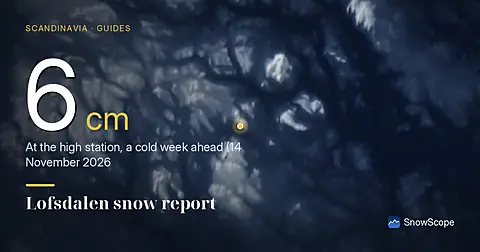
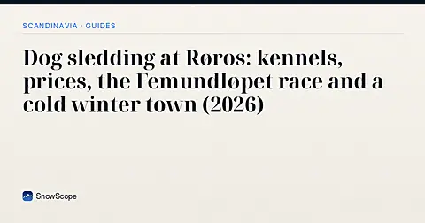
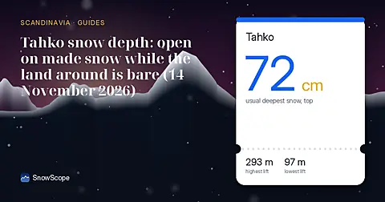
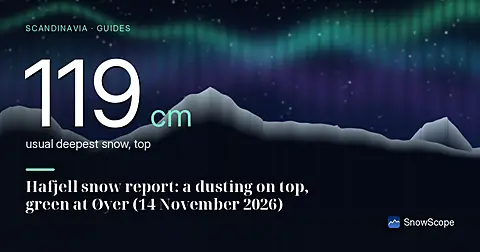
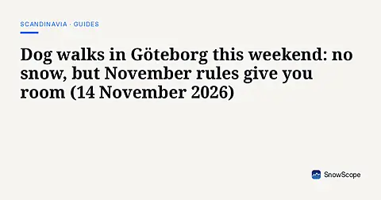
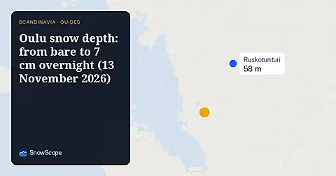

Snow reports · Scandinavia
Daily snow reports for skiers: where the snow is, what is coming and where to ski, from the SnowScope snow map and measuring stations. Every number comes from that day's data.
Snow by country today
The whitest countries today: Norway (89 %), Sweden (87 %) and Finland (55 %).
Most new snow in the week ahead: Norway (33 cm), Sweden (19 cm) and Finland (13 cm).

Despite 60 cm of fresh snow in 72 hours, Scandinavia's mid-November depths are well below average as of 16 November.

Riksgränsen dominates Scandinavia with 173 cm of snow depth measured on 16 November, holding far more mountain water than any rival resort in the region.

Himos snow in mid-November 2026: the weather stations around Jämsä measured 0 to 2 cm on 13 November; the first-snow cross-country loop opens on 14 November, the slope opening date is not set yet. Rain risk this week and 46 past winters.

Lofsdalen snow report for mid-November 2026: the Häggberget station at 682 m measured 6 cm on 12 November, valley stations 7 to 8 cm on 13 November; about 7 cm more forecast with no rain, opening 11 December, 46 past winters.

Narvikfjellet snow conditions in mid-November 2026: Norway's national snow map shows about 50 cm at 1110 m and 35 cm at 844 m but almost none by the fjord; the nearest Swedish station at Katterjåkk measured 9 cm. Week ahead and 46 past winters.

Røros dog sledding guide for winter 2026-27: about 5 to 6 cm of snow on Norway's national snow map, kennels listed by Destination Røros with prices, the Femundløpet sled-dog race in February 2027, and the rules for your own dog near tame reindeer.

Romme Alpin snow in mid-November 2026: Borlänge measured 4 cm, Ludvika 10 cm and Falun 0 cm on 13 November; rain this week; the season starts 19 December on made snow. What 46 past winters say about natural snow here.

Beitostølen snow conditions in mid-November 2026: about 10 to 13 cm across the whole area on Norway's national snow map, 10 cm more forecast this week with no rain, and how 46 past winters usually look at this high village.

Vuokatti snow conditions in mid-November 2026: the stations at Sotkamo measured 0 cm on 13 November, Kajaani 1 cm; about 9 cm is forecast this week but some of it as rain; slopes aim to open 4 December. 46 past winters.

Branäs snow conditions in mid-November 2026: the Kindsjön station at 425 m measured 27 cm on 13 November, Letafors 17 cm, Östmark in the valley 0 cm. Rain risk this week, opening 11 December, 46 past winters.

Idre Fjäll December skiing: 32 cm mid-mountain on a typical 15 December; 65 % of winters with 30 cm in mid-December, 76 % in Christmas week. Honest odds.

Norefjell snow depth in mid-November 2026: Norway's national snow map jumped from about 4-5 cm to 15-20 cm overnight, with about 45 cm on the high plateau. The week ahead, rain risk low down, and 46 past winters.

Tahko snow depth in mid-November 2026: the slope season opened on 13 November with 2 of 14 lifts, on made snow; the stations around measured 0 cm after a short 2 to 4 cm cover melted. The week ahead and 46 past winters.

Funäsdalsfjällen snow in mid-November 2026: the station at Ljusnedal measured 7 cm on 13 November, Tänndalen is open on a small area, Ramundberget opens 19 December. Week ahead and 46 past winters at both resorts.

Sälen December skiing: 28 cm on a typical 15 December and 48 % of winters with 30 cm in mid-December, down from the 1980s; Trysil next door does better.

Rovaniemi husky and dog guide for winter 2026-27: the weather stations measured 7 to 8 cm on 13 November, the city's first ski track opened, three husky farms listed by Visit Rovaniemi with dates and prices, daylight, and the rules for your own dog.

Myrkdalen snow depth in mid-November 2026: Norway's national snow map shows about 14 cm on the slopes and 33 cm at 1333 m; our forecast gives about 44 cm at the top in seven days. 46 past winters for late November.

Kiruna dog sledding guide for winter 2026-27: the weather station in Kiruna measured 0 cm of snow on 13 November, operators listed by Kiruna Lapland with season and prices, short days, and the rules for your own dog on ski tracks, in reindeer land and in Abisko National Park.

Saariselkä snow report for mid-November 2026: the weather station in Saariselkä measured 4 cm on 13 November, steady for a week; about 22 cm is forecast in seven days with no rain; slopes aim to open 21 November.

Riksgränsen and Björkliden snow report for mid-November 2026: the station at Katterjåkk measured 9 cm and Abisko 2 cm on 13 November, the week ahead, why the lifts open only in February, and 46 past winters.

Ruka December skiing: 6-day pass EUR 265, day EUR 58; 36 cm on a typical 15 December, but only 39 % of winters with 30 cm in the first week.

Hafjell snow report for mid-November 2026: about 2 cm near the top and nothing at the bottom on Norway's national snow map, 9 cm forecast at the top this week with rain below, and how 46 past winters usually look in late November.

On 13 November 2026 the weather stations in Stockholm and Helsinki measured 0 cm of snow while Sälen had 45 cm and Umeå 20 cm. Height, the sea, the city and the track of the storms explain it, with numbers from 46 past winters.

Hemavan December skiing: 82 cm mid-mountain on a typical 15 December, every winter with 30 cm there in mid-December; the deepest December of our Nordic set.

Pyhä-Luosto snow depth in mid-November 2026: weather stations around the fells measured 0 to 9 cm on 13 November, below normal; about 23 cm is forecast this week with no rain. Opening plans and 46 past winters.

Vemdalen snow conditions in mid-November 2026: Swedish weather stations around Vemdalsskalet and Björnrike measured 6 to 12 cm on 13 November after a snowy two days, about 8 cm more this week, opening plans and 46 past winters.

Voss snow forecast for mid-November 2026: Norway's national snow map shows about 20 cm at 1348 m and almost nothing in town, our forecast gives about 35 cm on top of Voss Resort over seven days with rain below about 600 m, plus 46 past winters.

A practical guide to dog sledding around Tromsø in winter 2026-27: which husky farms the tourist board lists, when the snow season starts, what a ride costs, the polar night, and the rules for walking your own dog on snow and near reindeer.

Kläppen snow depth in mid-November 2026: the weather station in Sälen, 13 km away, measured 45 cm on 13 November after 11 cm the day before; the resort reports 25 cm. Rain risk this week, opening 11 December, 46 past winters.

Oppdal December skiing: 60 cm at the 585 m base on a typical 15 December, 93 % of winters with 30 cm there in mid-December, better than Trysil's base.

Bergen dog owners, weekend of 14 November 2026: bare ground at Florida on Friday, 5 cm only up at Kvamskogen, and a very wet Sunday. Bergen's year-round leash rules, the four fenced dog yards, and the Fløyen trails.


Geilo December skiing: 57 cm mid-mountain on a typical 15 December, 96 % of winters with 30 cm in mid-December; day passes from NOK 590 (about EUR 56).

Göteborg dog owners, weekend of 14 November 2026: 0 cm of snow measured around the city on Friday, a mild, mostly dry weekend. Where the leash rules are relaxed in November, the 12 fenced dog yards and Delsjöområdet.


Helsinki for dog owners this weekend: 0 cm of snow measured at all five city stations on Friday. The Östersundom dog forest, nearly a hundred dog parks, the rules on ski tracks, and a grey, mild weekend.

Hemsedal December skiing: 70 cm mid-mountain and 106 cm at the top on a typical 15 December, but 32 cm at the base; Geilo nearby from NOK 590 a day.

Levi December skiing: 38 cm on a typical 15 December, 91 % of winters with 30 cm in Christmas week, and December snow up, not down; day pass EUR 60, EUR 57 online.

Luleå on 13 November 2026: the Kallax airport station sent no snow depth today, but the stations around the city measured 3 to 7 cm, all new since Thursday, with more snow falling on Friday.

Dog owners in Oslo, 13 November 2026: 4 cm of snow at Blindern, 31 cm at Bjørnholt and 37 cm at Tryvannshøgda. Where dogs may run free, what the leash rules say in November, and a cold, dry Saturday.

Measured snow in Oulu on 13 November 2026: 7 cm at Kaukovainio, 5 cm on Hailuoto, 8 cm at Ruukki, all new since Thursday. A little more on the way before Monday's thaw.

Measured snow in Rovaniemi on 13 November 2026: 7 cm at the airport, 8 cm at Apukka. Close to, but a little below, a normal mid-November, with a cold, snowy weekend coming.


Tampere on 13 November 2026: 0 cm at Tottijärvi and at the stations around the city, 2 cm at Hyytiälä to the north-east. In half of past winters Tampere was white by 10 November. A trace of wet snow on Saturday.

Measured snow in Tromsø on 13 November 2026: 6 cm at the town station on the island, 44 cm at 710 m in Lyngen, 3 cm at Bardufoss. Near normal for the date, and a very cold weekend ahead.


Ylläs snow conditions in mid-November 2026: the weather stations around Ylläs measured 0 to 2 cm on 13 November, far below normal; about 23 cm of snow is forecast this week with no rain, and the slopes aim to open on 21 November.

Kvitfjell snow conditions in mid-November 2026: about 5 cm on the upper slopes and 3 cm at the bottom on Norway's national snow map, roughly 10 cm forecast up high this week, and what 46 past winters say about late November and December.

Åre December skiing: 40 cm mid-mountain on a typical 15 December, 89 % of winters with 30 cm in mid-December, but a sharp fall at the top since the 1980s.

Measured snow around Östersund on 13 November 2026: 19 cm at Norderön, 24 cm at Marby, 33 cm at Rissna. Three to four times the usual depth for the date, with a cold, dry weekend ahead.

Measured snow depth in Norway on 13 November 2026: 37 cm at Tryvannshøgda above Oslo, 44 cm at Lyngen in Troms, 10 to 18 cm in the inland valleys, bare ground in Bergen, Trondheim and inland Finnmark.

Helsinki snow depth on 13 November 2026: 0 cm at Kaisaniemi, Kumpula, Tapiola, Helsinki-Vantaa and Nuuksio. The usual first-snow date, and a weekend forecast that keeps the city grey.

Umeå measured 20 cm of snow on 13 November 2026, up from bare ground on Wednesday. How the stations around the city compare, why this is early, and whether it survives Monday's rain.

Kiruna snow depth on 13 November 2026: 0 cm at the town station, at Jukkasjärvi and at Esrange. In our 46-winter snow history the town always had snow on this date. What the weekend brings.

Measured snow depth across Sweden on 13 November 2026: 133 of 322 stations white, a belt from Dalarna to Västerbotten with up to 45 cm, a bare south and an almost bare far north around Kiruna.

Stockholm snow depth on 13 November 2026: 0 cm at Observatoriekullen and at every station around the city. When the snow usually arrives, and why this weekend will not bring it.

Measured snow depth in Oslo on 13 November 2026: 4 cm at Blindern, 31 cm at Bjørnholt and 37 cm at Tryvannshøgda. What a normal mid-November looks like, and what the weekend does to it.

Measured snow on the ground on 13 November 2026 in Oslo, Bergen, Trondheim, Tromsø, Stockholm, Göteborg, Östersund, Umeå, Luleå, Kiruna, Helsinki, Tampere, Oulu and Rovaniemi: from 20 cm in Umeå to bare ground in Kiruna.